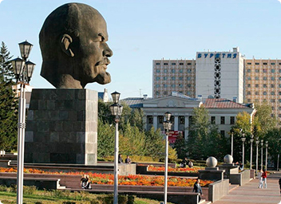

Путешествия по Байкалу
Туры по самому красивому месту России. Поехали с нами за новыми впечатлениями!
Подобрать турCategories


Основные напраления
-
Групповые и индивидуальные туры по Байкалу для российских и иностранных туристов
-
Экскурсии по городу Улан-Удэ, Республике Бурятия, городу Иркутск
-
Услуги гидов-переводчиков на любом иностранном язык
-
Круизы и прогулки по Байкалу на теплоходах и катерах
-
Профессиональная организация охоты и рыбалки на Байкале
-
Аренда автотранспорта для экскурсий и пассажирских перевозок
-
Бронирование гостиниц в городе Улан-Удэ и на Байкале
-
Организация индивидуальных туров и VIP-туров на Байкале
Популярные предложения
-
Зимний однодневный тур на Чивыркуйский залив
Cтоимость 4000 руб.
Зимний однодневный тур на остров Ольхон
Cтоимость 5000 руб.
Экскурсия в Иволгинский дацан
Продолжительность 4 часа Cтоимость от 500 руб.
Обзорная экскурсия по Улан-Удэ
Продолжительность 3 часа Cтоимость от 500 руб.
Эко-отель «Байкальское шале», с. Максимиха
Стоимость от 6500 руб.
Летний однодневный тур в Чивыркуйский залив
Cтоимость 4000 руб.
Отель «Белая Карета», с. Горячинск
Cтоимость от 3200 руб.
Однодневная поездка на Байкал «Байкальская Гавань»
Стоимость от 1000 руб.
Парк-отель «Сагаан-Морин», с. Сухая
Стоимость от 3500 руб.
Летний однодневный тур на остров Ольхон
Стоимость 8500 руб.
Парк-отель «Байкальская Ривьера», с. Гремячинск
Cтоимость от 3700 руб.
Зимний тур «Чивыркуйская сказка»
Стоимость 2000 руб.
Фотогалерея
Перейти в раздел


- 


Описанеи тур агенства
Байкальский отдых с нами – это легко!

На сайте туристического агентства «Байкальский отдых» вы найдете всю необходимую информацию о туристических базах отдыха на озере Байкал. Любите ли вы отличный сервис и европейский комфорт или предпочитаете прочувствовать все трудности дикого туризма и окунуться в атмосферу байкальской природы, здесь вы сможете найти турбазу по своему вкусу.
Туристические базы отдыха на Байкале предоставляют разнообразные условия размещения, они отличаются по перечню предлагаемых услуг и уровню комфорта.
Есть большие турбазы с полностью организованным питанием и вечерними дискотеками, есть также небольшие малолюдные базы всего с несколькими коттеджами. Можно арендовать отдельный гостевой домик с кухней и готовить пищу самостоятельно.
Среди этого многообразия обязательно найдется подходящая, именно вам, база отдыха. Тем не менее, Байкал, до сих пор, обладает всеми оттенками дикого экотуризма, чем и привлекает, уставших от городской суеты, туристов.
Если вы предпочитаете зимний байкальский отдых, к Вашим услугам круглогодичные отапливаемые турбазы и различные зимние развлечения. Байкал зимой поражает кристальной чистотой и прозрачностью льда.
Туристы очень любят отмечать Новогодние праздники и Рождество на турбазах Байкала, так как новый год на Байкале отличается особым волшебством. Развлекательную новогоднюю программу готовит почти каждая турбаза.
Статистика компании
7лет успешной работы
250+ отелей на Байкале
250+ отелей на Байкале
100+ различных туров
32 000 кв. км – площадь на которой мы организовываем путешествия
50 000 довольных туристов от 3 до 85 лет